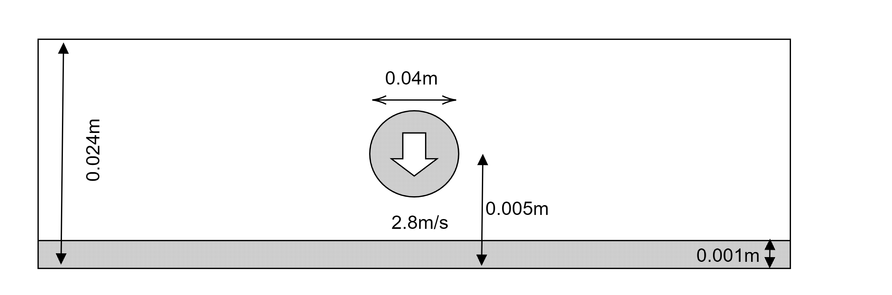

粒子法によるミルククラウンの解析
@tkoyama010
今回やったこと
PySPHの解析事例
ミルククラウンの解析

解析の実行方法
$ sudo apt-get install python-pysph # pysphのインストール
$ git clone git@github.com:tkoyama010/pysph.git # 今回のスクリプトのチェックアウト
$ cd pysph
$ git checkout feat/milk-crown
$ cd ../
$ python3 ./pysph/pysph/examples/milk_crown.py # スクリプトの実行
$ pysph dump_vtk milk_crown_output # vtkへの出力
結果の可視化